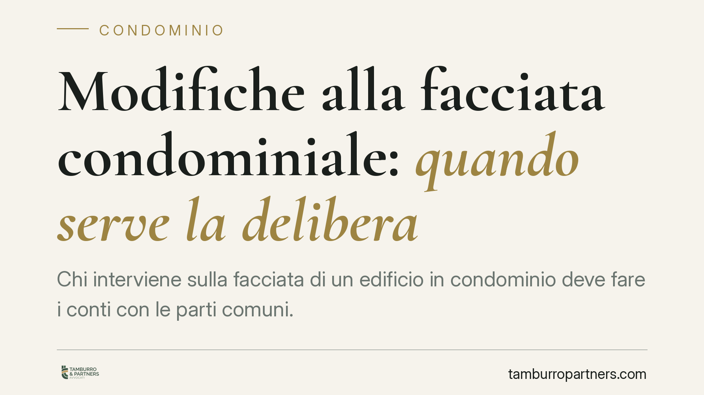

Modifiche alla facciata condominiale: quando serve la delibera
Chi interviene sulla facciata di un edificio in condominio deve fare i conti con le parti comuni. Un tema tornato al centro dell'attenzione riguarda il dovere del Comune di verificare, prima di rilasciare un titolo edilizio, la disponibilità del bene comune interessato. Il punto delicato è distinguere gli interventi che richiedono una delibera assembleare da quelli che, incidendo solo sulla manutenzione, non la impongono.

Il contesto
La facciata di un edificio condominiale è, di regola, parte comune. Chi possiede un appartamento — anche al piano terra — non può disporne come se fosse esclusivamente suo. Da qui una domanda ricorrente: per intervenire sulla facciata serve sempre il sì dell'assemblea?
La risposta non è un secco «sì» a ogni ipotesi. Occorre distinguere. E occorre chiarire un equivoco frequente: il giudice amministrativo (il TAR) non fissa regole di diritto condominiale. La sua competenza riguarda la legittimità del titolo edilizio. Ciò che può affermare è che il Comune, prima di rilasciare un permesso o accogliere una sanatoria, ha il dovere di verificare che il richiedente abbia la disponibilità giuridica del bene su cui intende operare. Se l'opera insiste su una parte comune, quella disponibilità presuppone il consenso condominiale.
> Nota di prudenza: gli estremi di singole pronunce vanno sempre verificati su fonte ufficiale prima di essere invocati. Qui interessa l'orientamento, non l'attribuzione a una specifica sentenza.
Inquadramento normativo
Il riferimento base è l'art. 1117 del Codice civile, che include tra le parti comuni i muri maestri e le facciate, salvo titolo contrario. Il singolo condomino può servirsi della cosa comune (art. 1102 c.c.), ma entro un doppio limite: non alterarne la destinazione e non impedire agli altri il pari uso.
Entra poi in gioco l'art. 1120 c.c. sulle innovazioni e, soprattutto, la nozione di decoro architettonico: l'insieme delle linee e delle strutture che danno all'edificio una sua fisionomia estetica unitaria. Quando un intervento sulla facciata incide su questo assetto — nuove aperture, modifica dei prospetti, elementi che rompono l'armonia dell'insieme — non è più libero esercizio del diritto individuale: serve una delibera dell'assemblea.
Diverso è il caso della manutenzione ordinaria che non altera il decoro né l'assetto della parte comune: la sostituzione di infissi con altri identici, la tinteggiatura nel rispetto dei colori esistenti, piccole riparazioni. Qui, in linea di massima, non è necessaria alcuna delibera. Affermare che «ogni» intervento richiede il via libera assembleare sarebbe impreciso: il vincolo scatta quando l'opera incide sul decoro architettonico o sull'assetto del bene comune.
Implicazioni pratiche
Per il proprietario che vuole modificare la propria porzione di facciata — aprire una vetrina, spostare una finestra, installare una struttura — il messaggio è chiaro: il titolo edilizio comunale non basta. Se l'intervento tocca il decoro o l'assetto della parte comune, l'assenso del condominio è un presupposto della legittimità dell'operazione.
Questo vale anche per le pratiche di sanatoria. La regolarizzazione urbanistica di un'opera già eseguita non «cancella» il profilo condominiale: il Comune può essere tenuto a verificare la disponibilità del bene, e l'assenza di consenso condominiale può bloccare la pratica.
Per l'amministratore, il tema è la corretta gestione delle richieste dei singoli e la tutela delle parti comuni. Per il condominio, la possibilità di far valere il proprio diritto anche davanti al giudice amministrativo, contestando titoli rilasciati senza verifica della disponibilità del bene.
Va ricordato, infine, che le pronunce di primo grado sono suscettibili di appello: gli orientamenti possono consolidarsi o essere rivisti nei gradi successivi.
Cosa fare in concreto
- Verificate la natura dell'intervento. Distinguete tra manutenzione che non altera il decoro (di norma libera) e opere che incidono su prospetti, aperture o assetto estetico (delibera necessaria).
- Acquisite il consenso prima di iniziare. Se l'opera tocca la parte comune, portatela in assemblea e conservate la delibera: è il documento che attesta la disponibilità del bene.
- Non confidate solo nel titolo edilizio. Il permesso comunale non sana l'eventuale difetto di consenso condominiale.
- Controllate il regolamento condominiale. Può contenere vincoli specifici su facciate e decoro, anche più stringenti della legge.
- Valutate preventivamente il profilo tecnico-giuridico. Prima di avviare una pratica edilizia o di sanatoria su parti comuni è opportuna una valutazione preventiva della posizione, per evitare contestazioni successive.
---
*Contributo informativo a cura di Tamburro & Partners Avvocati - Avv. Giuseppe Tamburro. Non costituisce parere legale.*
Ogni condominio ha una storia a sé.
Se gestisci un'amministrazione e vuoi un confronto su una specifica questione condominiale, scrivi allo studio. Ti rispondiamo entro un giorno lavorativo.